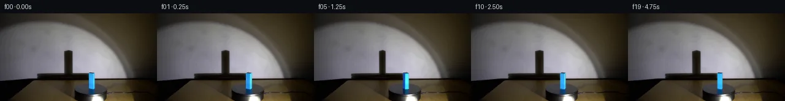
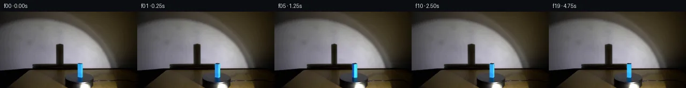
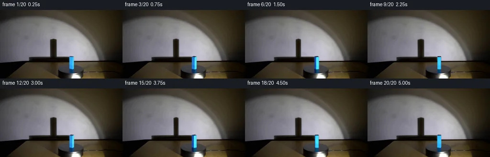
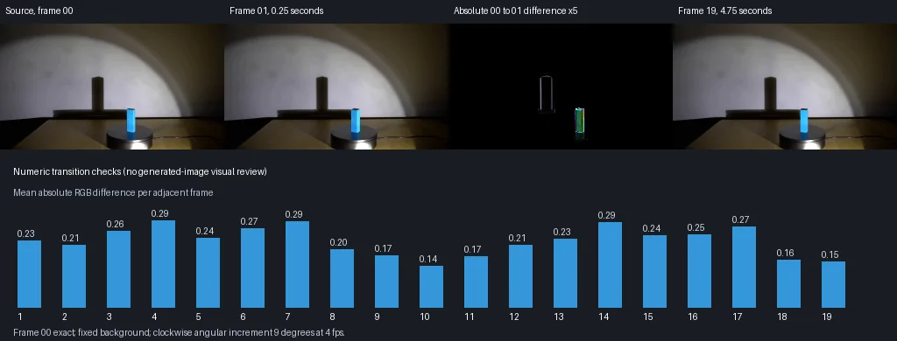

V0 · 初版
2026-11-05T03:52:02.391163+00:00 · RGB b2b6f6f8d430
![]()
Observable Generation Trace
把最终像素视频、Harness 冻结的每轮候选、真实工具事件和 Agent 自述放在同一页。可观测证据与模型自述分开标记，避免把“模型说它检查过”误当成真实工具调用。
![首帧]()
Static locked-off single-shot with fixed frame throughout filmed with constant framerate in real-time. The scene shows a realistic scientific demonstration. The scene only contains the described setup and actions. The blue rectangular block sits on the black, clockwise-rotating platform, and the spotlight points toward the block. A blue rectangular block rotates clockwise on the black platform while the spotlight casts a large shadow on the wall behind it.
首帧显示在左侧播放器初始画面。Track 权限、隔离和 tensor 一致性来自 run manifest，而不是 METHOD.md。
默认勾选初版和最终版；可选其他版本一起同步播放。仅检查图更新的连续重复快照已合并，回退旧视频仍保留为一次修订。
Observable events
来源：events.jsonl + run manifest
此 Track 禁止读取输出图片。逐轮预览由外部 Harness 自动冻结，只用于事后审计，生成 Agent 当时看不到这些页面。
Frozen candidates
每张图来自该 round 的真实 00 / 01 / 05 / 10 / 19 帧

pixels 4874eed6b51ddbbe · code 082d818b2558bc3b
--- previous/generate.py
+++ current/generate.py
@@ -0,0 +1,332 @@
+"""Local, deterministic prism projection and source-pixel compositing.
+No model, renderer, network access, or reference other than first_frame.png.
+"""
+from pathlib import Path
+import json, base64, re
+import numpy as np
+from PIL import Image, ImageDraw
+from scipy.ndimage import map_coordinates, gaussian_filter
+from scipy.spatial import ConvexHull
+from artifact_io import save
+
+ROOT=Path(__file__).resolve().parent
+W,H=256,144
+S=4
+SOURCE=np.asarray(Image.open(ROOT/'first_frame.png').convert('RGB'),dtype=np.float64)
+YY,XX=np.mgrid[:H,:W]
+# Sample at subpixel centers; image pixels have centers at integer coordinates.
+yh,xh=np.mgrid[:H*S,:W*S].astype(float)
+xh=(xh+0.5)/S-0.5; yh=(yh+0.5)/S-0.5
+CAM_X,CAM_Y=149.50,123.00
+HEIGHT=25.45
+LIGHT=np.array([76.0,-120.0,-13.5])
+LD=LIGHT/np.linalg.norm(LIGHT)
+Y_WALL=60.0
+THETA0=np.deg2rad(-20.)
+TURN_RATE=36.0
+
+
+def sample(a,x,y):
+ coords=np.array([y,x])
+ if a.ndim==2:
+ return map_coordinates(a,coords,order=1,mode='nearest')
+ return np.stack([map_coordinates(a[:,:,k],coords,order=1,mode='nearest') for k in range(a.shape[-1])],axis=-1)
+
+
+def footprint(theta):
+ u=np.array([np.cos(theta),np.sin(theta)])*3.7
+ v=np.array([-np.sin(theta),np.cos(theta)])*3.5
+ return np.array([-u-v,u-v,u+v,-u+v])
+
+
+def project(p):
+ p=np.asarray(p)
+ return np.stack([CAM_X+p[...,0],CAM_Y-0.28*p[...,1]-p[...,2]],axis=-1)
+
+
+def geometry(theta):
+ xy=footprint(theta)
+ bottom=np.c_[xy,np.zeros(4)]
+ top=np.c_[xy,np.full(4,HEIGHT)]
+ return bottom,top
+
+
+def shadow_geom(theta):
+ b,t=geometry(theta)
+ p=np.concatenate([b,t])
+ lam=(Y_WALL-LIGHT[1])/(p[:,1]-LIGHT[1])
+ q=LIGHT[None,:]+lam[:,None]*(p-LIGHT[None,:])
+ screen=project(q)
+ top=screen[4:]; bottom=screen[:4]
+ return {'points':screen,'left':screen[:,0].min(),'right':screen[:,0].max(),
+ 'top':top[:,1].min(),'base':np.mean(bottom[:,1]),
+ 'top_center':(top[:,0].min()+top[:,0].max())/2,
+ 'bottom_center':(bottom[:,0].min()+bottom[:,0].max())/2,
+ 'width':screen[:,0].max()-screen[:,0].min()}
+
+
+# Background estimation confined to the two old moving-object regions.
+CLEAN=SOURCE.copy()
+noise=SOURCE[57:103,125:147]-gaussian_filter(SOURCE[57:103,125:147],sigma=(1.1,1.1,0))
+for y in range(57,103):
+ if y<98:
+ lo,hi=101,123
+ else:
+ lo,hi=100,124
+ for x in range(102,122):
+ u=(x-lo)/(hi-lo)
+ CLEAN[y,x]=(1-u)*SOURCE[y,lo]+u*SOURCE[y,hi]+0.45*noise[y-57,(x-102)%22]
+# Smooth the background's central channel variation only where the original pole was.
+for y in range(96,125):
+ for x in range(144,155):
+ u=(x-143)/(156-143)
+ CLEAN[y,x]=(1-u)*SOURCE[y,143]+u*SOURCE[y,156]
+for y in range(124,133):
+ for x in range(142,158):
+ u=(x-141)/(159-141)
+ CLEAN[y,x]=(1-u)*SOURCE[y,141]+u*SOURCE[y,159]
… diff truncated; 245 more lines …pixels 9a63a49294e6c3de · code 29727c56487c4704
--- previous/generate.py
+++ current/generate.py
@@ -119,7 +119,7 @@
out*=prof
# Small deterministic surface variation, attached to local material coordinates.
out+=(0.45*np.sin(u*19.3+z*1.4+face*0.8))[...,None]
- return np.clip(out,0,255)
+ return np.minimum(np.maximum(out,0),np.array([112.,228.,253.]))
def prism(theta,reflection=False):
@@ -247,7 +247,7 @@
# Preserve source top-edge softness, but limit large model/background discrepancies.
strength=0.72
near=gaussian_filter(ba,sigma=0.30)
- img+=np.clip(corrected,-36,36)*strength*near[...,None]
+ img+=np.clip(corrected,-14,14)*strength*near[...,None]
img=np.clip(np.rint(img),0,255).astype(np.uint8)
if i==0: img=SOURCE.astype(np.uint8).copy()
blue=(img[...,2].astype(float)>img[...,0]*1.4)&(img[...,1]>100)&(YY>=96)&(YY<=124)&(XX>=138)&(XX<=161)
@@ -288,7 +288,7 @@
png=np.asarray(Image.open(ROOT/'frames'/f'{i:02d}.png'))
assert np.array_equal(decoded,png) and np.array_equal(decoded,frames[i])
html=(ROOT/'index.html').read_text()
- data=json.loads(re.search(r'const DATA=(.*?);\nconst frames',html,re.S).group(1))
+ data=json.loads(re.search(r'const DATA=(.*?);\nfunction unpack',html,re.S).group(1))
prior=np.frombuffer(base64.b64decode(data['first']),dtype='<u4').copy()
assert np.array_equal(prior,tensor[:,:,0].reshape(-1))
for i,encoded in enumerate(data['deltas'],1):pixels 9a63a49294e6c3de · code 29727c56487c4704
No generate.py text change in this frozen round.

pixels 2e3dd454707d59ae · code cbbbd9bcd0da5170
--- previous/generate.py
+++ current/generate.py
@@ -2,6 +2,8 @@
No model, renderer, network access, or reference other than first_frame.png.
"""
from pathlib import Path
+import sys
+sys.dont_write_bytecode=True
import json, base64, re
import numpy as np
from PIL import Image, ImageDraw
@@ -158,7 +160,7 @@
inside=np.ones(xh.shape,bool)
for eq in hull.equations:
inside&=(eq[0]*xh+eq[1]*yh+eq[2]<=0)
- upper=np.stack([38+0.5*(xh-CAM_X),79+2.8*(yh-97),115+4.6*(yh-97)],axis=-1)
+ upper=np.stack([38+0.5*(xh-CAM_X),43+2.8*(yh-97),58+4.6*(yh-97)],axis=-1)
color[inside]=np.clip(upper[inside],20,145); alpha[inside]=1
# Premultiply before reduction, so silhouettes do not acquire black edges.
prem=color*alpha[...,None]
@@ -282,10 +284,13 @@
def validate(frames,statistics):
tensor=np.load(ROOT/'pixels.npz')['pixels']
assert tensor.shape==(H,W,20) and tensor.dtype==np.uint32
+ assert int(tensor.max())<=0xFFFFFF
assert np.array_equal(frames[0],np.asarray(Image.open(ROOT/'first_frame.png')))
for i in range(20):
decoded=np.stack([(tensor[:,:,i]>>16)&255,(tensor[:,:,i]>>8)&255,tensor[:,:,i]&255],axis=-1).astype(np.uint8)
- png=np.asarray(Image.open(ROOT/'frames'/f'{i:02d}.png'))
+ png_file=Image.open(ROOT/'frames'/f'{i:02d}.png')
+ assert png_file.mode=='RGB' and png_file.size==(W,H)
+ png=np.asarray(png_file)
assert np.array_equal(decoded,png) and np.array_equal(decoded,frames[i])
html=(ROOT/'index.html').read_text()
data=json.loads(re.search(r'const DATA=(.*?);\nfunction unpack',html,re.S).group(1))
@@ -296,13 +301,17 @@
while j<len(patch):
start,count=map(int,patch[j:j+2]);j+=2;prior[start:start+count]=patch[j:j+count];j+=count
assert np.array_equal(prior,tensor[:,:,i].reshape(-1))
- static=(YY<53)|((XX<55)&(YY<107))|((XX>190)&(YY<120))|((YY>=134)&(XX<120))
+ dynamic_roi=((XX>=96)&(XX<=130)&(YY>=54)&(YY<=106))|((XX>=138)&(XX<=162)&(YY>=95)&(YY<=133))|((XX>=120)&(XX<=176)&(YY>=114)&(YY<=133))
+ static=~dynamic_roi
assert np.array_equal(frames[:,static],np.broadcast_to(frames[0,static],frames[:,static].shape))
assert all(abs(statistics[i]['clockwise_deg']-statistics[i-1]['clockwise_deg']-9)<1e-9 for i in range(1,20))
- report={'checks_passed':['20 RGB 256x144 PNGs','frame 00 exact input equality','uint32 H,W,T 0xRRGGBB packing','all PNG/tensor pixel equality','standalone-player delta reconstruction','static-region exact equality','constant 9-degree clockwise angular step'],
+ report={'checks_passed':['20 RGB 256x144 PNGs','frame 00 exact input equality','uint32 H,W,T 0xRRGGBB packing','all PNG/tensor pixel equality','standalone-player delta reconstruction','static-region exact equality','constant 9-degree clockwise angular step','all pixels outside moving regions unchanged','RGB PNG modes and dimensions'],
'fps':4,'duration_s':5,'sample_times_s':[i/4 for i in range(20)],
'maximum_adjacent_mean_absolute_rgb_change':max(s['mean_abs_delta'] for s in statistics[1:]),
'changed_pixels_per_transition':[s['changed_pixels'] for s in statistics[1:]],
+ 'fixed_prism_axis_pixel':[CAM_X,CAM_Y],
+ 'static_pixels_per_frame':int(static.sum()),
+ 'prism_height_units':HEIGHT,
'frames':statistics}
(ROOT/'numeric_checks.json').write_text(json.dumps(report,indent=2)+'\n')
print(json.dumps({k:v for k,v in report.items() if k!='frames'},indent=2))pixels 2e3dd454707d59ae · code cbbbd9bcd0da5170
No generate.py text change in this frozen round.
Final visual checks
Harness 保存的最终产物


Agent claims
以下文字由生成 Agent 撰写，不等同于工具证据
The supplied RGB image is 256 × 144. The camera is fixed. The rear wall occupies approximately rows 0–107, with a large pale spotlight pool centered toward the left/middle. The wood tabletop begins near row 109. The black/charcoal platform has an elliptical top approximately bounded by x=121–174, y=115–134, and a reflective cylindrical rim extending to the image bottom. Its circular outline stays fixed as it rotates.
The upright blue block is centered near x=149.5. Its visible body spans roughly x=144.5–154.5, y=97–124.5. The broad front face is cyan-blue (representative interior RGB around 48,170,242); the narrow right face is brighter (around 90,215,250). The upper surface is dark and approximately two pixels deep. The block makes a short dim blue reflection on the platform, around y=124–133.
The large upright wall shadow spans approximately x=104–119, y=61–99. Its interior is warm dark brown (around 25,18,10). Its vertical edges are softly antialiased, and its top has a small curved penumbra. A separate broad platform shadow forms the horizontal dark bar around x=61–145, y=99–107. The lamp itself is out of frame. All unchanging wall, wood, spotlight, and platform-rim texture should remain registered to the source image.
Use a rectangular prism centered on the platform with a footprint of approximately 7.4 × 7.0 image-scale units and height 25.45 units. Rotate it clockwise as seen from above at 36 degrees/second. The camera uses a local orthographic projection, with depth foreshortening 0.28. A fixed point-light projection toward a rear wall produces a larger offset silhouette. Calibrate its initial shadow against the source. Reconstruct only the old block and its upright shadow from neighboring local pixels; shade rotated prism faces with a fixed light direction and use the source's vertical color variations. Preserve the source's soft shadow texture via a geometry-guided warp. Adapt the platform's local blue reflection and add a very subtle rotating surface-texture component. Frame 00 is copied exactly, with no modification.
Constant sampling at 4 fps. Each row describes the relative clockwise angle; there are no cuts, translations, added objects, or changes to the spotlight.
| Frame | Time (s) | Turn (degrees) | Event |
|---|---|---|---|
| 00 | 0.00 | 0 | Exact supplied source |
| 01 | 0.25 | 9 | Begin smooth clockwise turn; faces and shadow change slightly |
| 02 | 0.50 | 18 | Leading side widens |
| 03 | 0.75 | 27 | Turn continues uniformly |
| 04 | 1.00 | 36 | Face division advances across the block |
| 05 | 1.25 | 45 | Side/front visibility follows prism orientation |
| 06 | 1.50 | 54 | Shadow responds to changing projected footprint |
| 07 | 1.75 | 63 | Continue turning without shifting platform center |
| 08 | 2.00 | 72 | Near next principal face orientation |
| 09 | 2.25 | 81 | Adjacent face takes over |
| 10 | 2.50 | 90 | Quarter revolution |
| 11 | 2.75 | 99 | Continue same angular velocity |
| 12 | 3.00 | 108 | Updated surface illumination and wall silhouette |
| 13 | 3.25 | 117 | Continuous motion |
| 14 | 3.50 | 126 | Continue rotation |
| 15 | 3.75 | 135 | Faces remain straight and block upright |
| 16 | 4.00 | 144 | Shadow remains anchored above platform-shadow bar |
| 17 | 4.25 | 153 | Approach half revolution |
| 18 | 4.50 | 162 | Continue uniformly |
| 19 | 4.75 | 171 | Finish while still rotating |
Generated images will be checked only by local Python pixel analysis and numeric geometry/continuity checks. No generated image will be opened in an image Read/View tool. The attached initial image supplies the only visual observation.
The continuation uses deterministic local Python pixel operations and a small analytic prism model. The only scene inputs are first_frame.png and prompt.txt. No network, external reference, AI model, external rendering engine, or subagent was used.
The photographed source provides the wall, spotlight, wood tabletop, platform outline, and reflective platform rim. The original upright shadow and blue block are removed locally using horizontal interpolation between neighboring pixels. Small wall texture residuals are copied from a nearby part of the same source image. The dim blue reflection is reconstructed locally on the dark platform.
A rectangular prism has a 7.4 × 7.0 unit footprint, a height of 25.45 image-scale units, and a fixed projected axis at (149.5, 123.0). The local camera projection is x = 149.5 + X, y = 123.0 − 0.28 Y − Z. The footprint starts at a yaw of −20 degrees and decreases by 9 degrees per frame, producing clockwise motion as seen from above. This is 36 degrees/second, with no camera movement or change in speed.
Visible prism faces and the upper surface are rasterized at four times the output resolution. Surface color combines a fixed light direction, a blue plastic color response, a small height-dependent variation measured from the source block, and restrained source texture corrections. Pixel coverage is premultiplied before averaging to 256 × 144. The upper face stays dark because the source lamp is low relative to the block.
For the shadow, the prism's eight corners are projected from a fixed point light at (76, −120, −13.5) toward a rear wall at Y = 60. The resulting silhouette width, top height, and top/bottom horizontal centers guide a warp of the source's measured shadow attenuation. This preserves the photographed brown ambient tone and soft penumbra while changing the shadow with the block orientation. The separate horizontal platform shadow remains fixed, as expected for the circular platform.
The blue reflection uses the same visible prism faces, compressed vertically and reflected below the contact plane, with reduced color and opacity. A warped local source residual preserves its photographed appearance. Faint measured surface texture rotates clockwise within the disk, while its axisymmetric outline, illumination, and bright cylindrical rim stay fixed.
Frame 00 is copied directly from the supplied RGB input after all other calculations. It is exactly equal in pixel values to the input.
There are 20 RGB frames at 256 × 144, sampled at 4 fps. Sample times are 0.00 through 4.75 seconds; displaying each frame for 0.25 seconds gives a five-second sequence. The final frame has turned 171 degrees from the source orientation.
generate.py: reproducible generator and numeric validation.frames/00.png through frames/19.png: the complete sequence.pixels.npz: pixels, a uint32 tensor of shape (144, 256, 20), with each value packed as 0xRRGGBB.index.html: standalone pixel player containing the initial frame and exact per-frame delta packets; no external assets are needed.inspection.png: eight-frame contact sheet.transition_check.png: source, first continuation, amplified difference, final frame, and numeric transition chart.numeric_checks.json: dimensions, equality checks, timing, geometry, and transition measurements.OBSERVATION.md: source measurements and the twenty-frame plan, written before the generator.Run python generate.py from this workspace to regenerate the output.
The generator verifies all twenty PNGs against the packed tensor, checks exact input equality for frame 00, checks PNG RGB mode and dimensions, reconstructs the player's delta packets and compares them against every tensor frame, verifies a constant clockwise angular increment, and asserts exact pixel stability outside the defined moving regions. It also records adjacent-frame differences and the block/shadow bounds for all frames.
Generated outputs were inspected only through local code and numeric checks. No generated image was opened using an image Read/View tool, and no visual review of the generated frames is claimed. Numeric sampling prompted revisions to face highlight saturation, surface corrections, and the dark upper-surface color.
The small camera model and fitted lamp/wall distances are approximations inferred from one image. Shadow shape changes use a geometry-guided warp of the photographed attenuation field rather than a complete optical simulation. Hidden wall and platform pixels are estimated from their immediate surroundings.